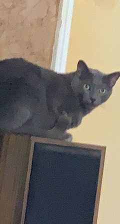

Welcome to the fan page for Captain Jaidyn! When Jaidyn is not tackling her 50 million responsibilities on campus, she is fighting her biggest enemies: Dobby and Shady. They are the cutest but most menacing bandits around. They have robbed over 20 banks and have taken almost 5 lives. They are on the top of the FBI's Most Wanted list for their crimes, and Jaidyn wants to stop them before they take over the world.